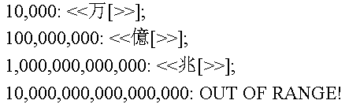

A Rule-Based Approach to Number Spellout
by Richard Gillam
Advisory Software Engineer
Center for Java Technology–Silicon Valley
IBM Corp.
One of the more important areas of software internationalization is that of numeric formatting and parsing—that is, the translation of numeric values to their textual representation and back. But the bulk of the work done in this area has been concerned with formatting and parsing values written as numerals, and most of that has been centered on formatting and parsing so-called "Arabic" numerals (since real Arabic text actually uses a different set of numeral symbols than those used in the West, we’ll use the term "Western numerals" instead), with most of the rest centered on Han characters and on other numeration systems that use the same positional format as Western numerals. Comparatively little work has been done on the problem of formatting and parsing numeric values expressed in words.
Spelling out numeric values in words (we’ll use the phrase "number spellout" to refer to this from now on) is actually a relatively useful capability. Financial applications spell out numeric values on checks and wire-transfer directives because spelled-out numbers are harder to counterfeit. Number spellout can also have great utility in text-to-speech and speech recognition systems, where it would be much more natural for the user to say "three thousand four hundred twenty-six dollars and fifty-two cents" than, say, "command dollar three comma four two six point five two end command."
We in the Taligent International group (now part of IBM’s Center for Java Technology) first encountered this problem when a client requested that we add an internationalizable number-spellout capability to our C++ International Classes product. After considering and rejecting several approaches, we settled on a simple yet very powerful approach to this problem that makes use of a list of rules. As a bonus, it turns out this technology is powerful and extensible enough to work for a variety of other number-formatting problems that are more complicated than merely translating a number into Western numerals and back.
Solving the number-spellout problem in English is a relatively easy thing to do—algorithms to do this are well-known and widely used. The code usually looks something like this:
private static final String[] ones =
{ "zero", "one", "two", "three", "four", "five", "six", "seven",
"eight", "nine" };
private static final String[] teens =
{ "ten", "eleven", "twelve", "thirteen", "fourteen", "fifteen",
"sixteen", "seventeen", "eighteen", "nineteen" };
private static final String[] tens =
{ "ten", "twenty", "thirty", "forty", "fifty", "sixty", "seventy",
"eighty", "ninety" };
private static final String hundred = " hundred";
private static final String thousands =
{ " thousand", " million", " billion", " trillion" };
public String spellout(int x) {
if (x < 10)
return ones[x];
if (x < 20)
return teens[x - 10];
if (x < 100) {
if (x % 10 == 0)
return tens[x / 10];
else
return tens[x / 10] + "-" + ones[x % 10];
}
if (x < 1000) {
if (x % 100 == 0)
return ones[x / 100] + hundred;
else
return ones[x / 100] + hundred + " " +
spellout(x % 100);
}
if (x < 1000000) {
if (x % 1000 == 0)
return spellout(x / 1000) + thousands[0];
else
return spellout(x / 1000) + thousands[0] + " " +
spellout(x % 1000);
}
if (x < 1000000000) {
if (x % 1000000 == 0)
return spellout(x / 1000000) + thousands[1];
else
return spellout(x / 1000000) + thousands[1] + " " +
spellout(x % 1000000);
}
}
The problem with this approach is that it doesn’t internationalize well. Obviously the first step would be to alter the algorithm to load all of the words from resource files rather than hard-coding them. This is a good first step, but it’s not enough. Other languages need more canned strings than English does.
For instance, the punctuation between the digit positions varies between languages. In English and French, for example, there’s a hyphen between the tens digit and the ones digit, but in Spanish, the word "y" separates them. Russian uses a space. Italian, Greek, and Swedish use nothing at all: the tens and ones digits run together into a single word.
Likewise, the punctuation between the other digit positions varies between languages, and often differs from the punctuation between the ones and tens digits. In English and French, a hyphen is used between the ones and tens digits, but spaces are used between the others. But in German, the whole number runs together into a single word. In Italian, the number runs together into a single word when it’s smaller than 100,000, but is broken into multiple words for large numbers.
So you would also need canned strings for the separators between the words that make up the number. Unfortunately, this also isn’t good enough. In most languages, the words for the values from 11 to 19 are based on the words for the values from 1 to 9, but are not simple concatenations. In English, for example, 15 is "fifteen" and not "fiveteen." This also happens for the words for the tens digits in most languages. In some languages, this kind of thing also applies to other groups of words. In Spanish, for example, numbers between 30 and 99 are written with "y" between the digit places: 34 is "treinta y cuatro." But the numbers between 21 and 29 contract the phrase into a single word: "veinte y cinco" (25) becomes "veinticinco." In fact, this contraction cannot be handled algorithmically because the spelling of the ones digit sometimes changes in contraction. 22 is "veintidós," not "veintidos."
The same thing happens with the hundreds place in Spanish and Greek. In Spanish, for example, the multiplier and the word for 100 run together into a single word—200 is "doscientos," not "dos cientos"—but the multiplier often changes spelling in contraction—500 is "quinientos," not "cincocientos."
So you would need canned strings for the twenties and hundreds in addition to the ones, teens, and tens. Even this isn’t enough. In many languages, if the multiplier before the word for "hundred" or "thousand" is 1, it is omitted: in French, 100 is "cent," not "un cent." Furthermore, in many languages, the words for 100, 1000, and so forth pluralize when the multiplier is greater than 1—in French again, 100 is "cent," but 200 is "deux cents." And in Spanish, the form of the word for 100 also changes when there are digits to the right of it: 100 is "cien," but 101 is "ciento uno."
So we would need additional strings to account for the possible variant spellings of the words for 100, 1000, and so on. This is a lot of data, and much of it is only necessary in a few languages. But even with all these variant strings, we still can’t accommodate even the common European languages fully. You also need variant code in the algorithm itself. In German, for example, the ones digit comes before the tens digit: 23 is "dreiundzwanzig," not "zwanzigunddrei." In French, "et" is inserted between the tens and ones digits, but only when the ones digit is 1: 21 is "vingt-et-un," but 22 is "vingt-deux." In Italian, when the tens digit ends with a vowel and the ones digit begins with a vowel, the vowel is dropped from the tens digit: 50 is "cinquanta," and 52 is "cinquantadue," but 51 is "cinquantuno." In Greek, the word for each tens digit has an accent mark that disappears when combined with a ones digit: 30 is "triánta" but 31 is "triantaéna".
Another area that has to be variable is major groupings. In American English and the other European languages, large numbers are grouped by thousands (i.e., after a thousand, a new word is introduced every factor of 1,000). In British English, however, large numbers are grouped by million (a "billion" in British English is a "trillion" in American English; what we call a "billion" is called a "thousand million" in Britain). More importantly, in Japanese, large numbers are grouped by ten thousand, rather than by thousand.
Finally, French has a couple peculiarities of its own: In European French, there are no words for 70, 80, or 90. The numbers from 70 up are rendered as "soixante-dix," "soixante et onze," "soixante-douze," "soixante-treize," and so on (literally, "sixty-ten," "sixty and eleven," "sixty-twelve," "sixty-thirteen," etc.) 80 is rendered as "quatre vingts" (literally, "four twenties"), and the numbers proceed by score from there (i.e., 81 is "quatre-vingt-un" ("four-twenty-one"), 90 is "quatre-vingt-dix" ("four-twenty-ten"), 91 is "quatre-vingt-onze" ("four-twenty-eleven") and so on). In addition, the numbers between 1,100 and 1,200 are rendered as "onze cents…" (literally, "eleven hundred…") instead of "mille cent…" ("one thousand one hundred…").
Clearly, the procedures for spelling out numbers in different languages vary along too many axes for it to be feasible to design a number-spellout engine based on canned strings and user-selectable options that will cover everything well. It is theoretically possible, of course, but such an algorithm would be large and complicated, difficult to use, and rigid and inflexible. If there were a language with unique requirements the author of the formatter wasn’t aware of when he wrote the formatter, that language’s numbers wouldn’t be formattable.
This seemed to leave us with two options: either simply allow a whole new formatting function to be written for each language, or design a programmable formatter and a programming language designed specifically for describing how numbers are spelled out. We at Taligent have come to prefer data-driven extensibility over exposing a subclassing API when it’s possible to express an object’s behavior in a metalanguage that is simpler and easier to understand than C++ or Java would be. This is the approach we took with number spellout.
Despite the widespread differences in how various languages spell out numbers, there were a few important commonalities: Every language we researched lends itself well to a recursive algorithm: the digits to the right of the hundreds position, for example, usually are spelled out the same way whether or not there are any digits to their left. Likewise, the multiplier on "hundred," "thousand," or "million" usually has the same form as the number would standing alone. This leads to an algorithm that depends on isolation of certain digits and recursion to do its job. This type of approach turns out to be simple, elegant, and very powerful and flexible.
The procedure for formatting a number is expressed as a semicolon-delimited list of rules. In its simplest form, a rule is simply the text to return when presented with a number, so the spellout rules for English start out very simply:
zero; one; two; three; four; five; six; seven; eight; nine; ten; eleven; twelve; thirteen; fourteen; fifteen; sixteen; seventeen; eighteen; nineteen; twenty;
Now, for numbers greater than twenty, we can use this same list of rules to format the digit in the ones place. We use ">>" to denote that:
twenty; twenty->>;
When the number is formatted, the ones digit is isolated, the word for it is looked up in this same list, and then inserted into the result string where the ">>" was (the ">>", of course, is deleted).
This approach will work for the numbers from 21 to 29, so we don’t need separate rules for each of those numbers. We can avoid providing a rule for every number by specifying the next rule’s base value—that is, the lowest value to which a rule applies. We do that by appending a number to the front of the rule and separating it from the rule text with a colon (whitespace after the colon is ignored):
twenty; twenty->>; 30: thirty;
A rule applies to all numbers from its base value to one less than the next rule’s base value. If a rule doesn’t specify a base value (such as those is the first list above), its base value is the previous rule’s base value plus one (and the first rule in the list has a base value of 0, unless otherwise specified).
The rule for 31 through 39 has the same form as the one for 21 through 29, giving us this rule set so far:
zero; one; two; three; four; five; six; seven; eight; nine; ten; eleven; twelve; thirteen; fourteen; fifteen; sixteen; seventeen; eighteen; nineteen; twenty; twenty->>; 30: thirty; thirty->>;
(Whitespace after semicolons is ignored, allowing you to add, or omit, carriage returns, spaces, and tabs as appropriate to enhance readability.)
Now, of course, the rules for 21 and 31 are exactly the same as the rules for 20 and 30, except for the hyphen and the ">>" token (we’ll call the ">>" a substitution from now on). We could abbreviate these two rules by simply enclosing the added text in brackets:
twenty[->>]; 30: thirty[->>];
A rule with a range of text in brackets is automatically expanded into two rules: one without the text in brackets, and a second one with the bracketed text (without the brackets, of course) and a one-higher base value. So this much syntax gets us all the numbers from 0 to 99:
zero; one; two; three; four; five; six; seven; eight; nine; ten; eleven; twelve; thirteen; fourteen; fifteen; sixteen; seventeen; eighteen; nineteen; twenty[->>]; 30: thirty[->>]; 40: forty[->>]; 50: fifty[->>]; 60: sixty[->>]; 70: seventy[->>]; 80: eighty[->>]; 90: ninety[->>];
The rule for 100 builds on what comes before it: we already have all the rules we need to format the tens and ones digits, so we can take advantage of recursion to handle those digit positions. Again, we use the ">>" notation to denote this:
100: one hundred; 101: one hundred >>;
Notice that the meaning of ">>" has changed. In the rules for 20 through 90, ">>" referred to just the ones digit. Here, it refers to the tens and ones digits together. The meaning of the ">>" token is context-dependent. Which digits it refers to depends on the rule’s base value. To determine the meaning of the substitution token, we calculate the rule’s power of 10, which is the common logarithm of the base value, rounded to the next-lowest integer. So for the 90 rule, the power of 10 is 1 (1.954… rounded down to the nearest integer), and for the 100 rule, the power of 10 is 2 (exactly). When filling in the substitution, we take the value being formatted modulo 10 to the power of the rule’s power of 10. For 99, the substitution value would be 99 mod 10, or 9. For 109, the substitution value is 109 mod 100 (because the rule’s power of 10 is now 2), which is also 9. The context-sensitivity of the substitution token is one of the keys to this language’s simplicity.
Also note that we begin to see multiple levels of recursion here: If you format 123 with this rule set, you’ll start with "one hundred >>", and then go back and look up a rule for 23: This will give you "twenty->>", so you now would have "one hundred twenty->>". Then you’d look up the rule for 3, yielding "one hundred twenty-three."
Also note that we can still use the bracket notation at this level, compressing the two rules listed above into one:
100: one hundred[ >>];
Of course, we can also use this same set of rules to handle the word before "hundred." This is denoted with "<<":
100: << hundred[ >>];
We’ll call "<<" the major substitution and ">>" the minor substitution. Just as the minor substitution is filled in by taking the value being formatted modulo 10 to the rule’s power of 10, the major substitution is filled in by taking the value being formatted divided by 10 to the rule’s power of 10 (and truncated to an integer, of course). So to format 234, we’d start with "<< hundred >>", fill in the minor substitution by looking up an appropriate rule for 34, giving us "<< hundred thirty->>", fill in the new minor substitution by looking up an appropriate rule for 4, giving us "<< hundred thirty-four", and finally, fill in the major substitution by dividing 234 by 100 and looking up an appropriate rule for 2: "two hundred thirty-four."
So the rule for 101 will actually work for all values from 101 to 999. Or will it?
If we try to format 200 with this rule set, we’ll actually use the rule for 101, which includes a minor substitution. 200’s minor substitution value is 0, so we’ll get "two hundred zero." This anomaly is accounted for in the algorithm, rather than the rule syntax: If a rule has both major and minor substitutions and the value being formatted has a minor-substitution value of 0, we roll back and use the rule that precedes the current rule in the list. So the rule for 101 actually doesn’t cover the entire range from 101 to 999—100, 200, 300, 400, 500, 600, 700, 800, and 900 are covered by the rule for 100 instead.
This small addition to the algorithm simplifies tremendously both the description language and the actual algorithm. Without it, you’d either need far more rules to get the right effect, or the algorithm would have to be extended to deal explicitly with optional text in the rules: Instead of expanding to two rules, a rule that included [] would still be a single rule that would contain both mandatory and optional text. This drastically increases the state that has to be carried around in each rule just to achieve the same effect we achieve through the use of the "rollback rule" described above.
So what if you want "two hundred zero"? Just add it to the rule for 100:
100: << hundred zero; << hundred >>;
With this combination of new features, we can get from 0 to 999. The rule for 1000 looks just like the rule for 100:
1000: << thousand[ >>];
Here, the rule’s power of 10 is 3, so the meanings of the substitutions change again. Now the minor substitution handles the value being formatted mod 1000, and the major substitution handles the value being formatted divided by 1000.
So the full rule set now looks like this:
zero; one; two; three; four; five; six; seven; eight; nine; ten; eleven; twelve; thirteen; fourteen; fifteen; sixteen; seventeen; eighteen; nineteen; twenty[->>]; 30: thirty[->>]; 40: forty[->>]; 50: fifty[->>]; 60: sixty[->>]; 70: seventy[->>]; 80: eighty[->>]; 90: ninety[->>]; 100: << hundred[ >>]; 1000: << thousand[ >>];
In English, notice that we don’t start using a new word until we get to 1,000,000. So this set of rules is sufficient to format numbers from 0 all the way to 999,999. What the major groupings are based on is implicit in where new rules are added to the list. So each rule covers an ever-larger range of numbers, leading to a full rule set that looks like this:
zero; one; two; three; four; five; six; seven; eight; nine; ten; eleven; twelve; thirteen; fourteen; fifteen; sixteen; seventeen; eighteen; nineteen; twenty[->>]; 30: thirty[->>]; 40: forty[->>]; 50: fifty[->>]; 60: sixty[->>]; 70: seventy[->>]; 80: eighty[->>]; 90: ninety[->>]; 100: << hundred[ >>]; 1000: << thousand[ >>]; 1,000,000: << million[ >>]; 1,000,000,000: << billion[ >>]; 1,000,000,000,000: << trillion[ >>]; 1,000,000,000,000,000: OUT OF RANGE!;
(We allow commas, periods, and spaces in the base value to enhance readability; the parser ignores them.)
For British English, which defines a billion as a million million instead of a thousand million as in the U.S., we just change the frequency of the last few rules:
1000: << thousand[ >>]; 1,000,000: << million[ >>]; 1,000,000,000,000: << billion[ >>]; 1,000,000,000,000,000,000: OUT OF RANGE!;
1,000,000,000 will now use the rule for 1,000,000, producing "one thousand million."
Note the final rule in each of these lists. Since the upper limit of the range a rule applies to is determined by the next rule in the list, the last rule in the list has no upper limit. It applies to every number greater than or equal to its base value. When the numeric type doesn’t impose an upper limit (our implementation uses the Java long type, whose upper limit is 1.84 × 1019), the base value of the last rule in the list can be used to specify the upper limit for the rule set. It is a useful convention to code an error message as the last rule’s rule text to show this.
This approach obviously works quite well for English, but what about other languages? Well, in Spanish, we can handle the numbers from 21 to 29 with more rules:
cero; uno; dos; tres; cuatro; cinco; seis; siete; ocho; nueve; diez; once; doce; trece; catorce; quince; dieciséis; diecisiete; dieciocho; diecinueve; veinte; veintiuno; veintidós; veintitrés; veinticuatro; veinticinco; veintiséis; veintisiete; veintiocho; veintinueve; treinta[ y >>]; 40: cuarenta[ y >>]; 50: cincuenta[ y >>]; 60: sesenta[ y >>]; 70: setenta[ y >>]; 80: ochenta[ y >>]; 90: noventa[ y >>];
Notice also that we can specify that "y" is to go between the tens and ones digits simply by including "y" instead of "-" in the brackets of the tens rules.
The differing form of "cien" depending on its context is also easily handled…
100: cien; 101: ciento >>; 200: doscientos[ >>];
…as are the extra words for the hundreds place…
300: trescientos[ >>]; 400: cuatrocientos[ >>]; 500: quinientos[ >>]; 600: seiscientos[ >>]; 700: setecientos[ >>]; 800: ochocientos[ >>]; 900: novecientos[ >>];
…and the fact that the word before "mil" is omitted if it’s "uno":
1000: mil[ >>]; 2000: << mil[ >>];
In German, the numbers from 13 to 19 can be derived algorithmically, so we don’t need to spell them all out…
null; eins; zwei; drei; vier; fünf; sechs; sieben; acht; neun; zehn; elf; zwölf; >>zehn;
…and the fact that the ones digit comes before the tens digit is also easily handled by putting the substitution in a different place…
20: zwanzig; einundzwanzig; >>undzwanzig; 30: dreißig; einunddreißig; >>unddreißig; 40: vierzig; einundvierzig; >>undvierzig; 50: fünfzig; einundfünfzig; >>undfünfzig; 60: sechzig; einundsechzig; >>undsechzig; 70: siebzig; einundsiebzig; >>undsiebzig; 80: achtzig; einundachtzig; >>undachtzig; 90: neunzig; einundneunzig; >>undneunzig;
Notice also here that because 1 is "eins" in German rather than "ein," we have to special-case the ones place. We’ll look at an extension that eliminates this problem later.
The rules for spelling out numbers in Han characters (used in Japanese, Chinese, and Korean) are particularly simple…
…and the fact that CJK numerals group by ten thousand is easily handled by the spacing of the rules:

In French, things don’t work as well. Again, we have to special-case two-digit numbers ending in 1…
zéro; un; deux; trois; quatre; cinq; six; sept; huit; neuf; dix; onze; douze; treize; quatorze; quinze; seize; dix-sept; dix-huit; dix-neuf; vingt; vingt-et-un; vingt->> 30: trente; trente-et-un; trente->> 40: quarante; quarante-et-un; quarante->>; 50: cinquante; cinquante-et-un; cinquante->>; 60: soixante; soixante-et-un; soixante->>;
…and for the numbers from 70 through 90, we have to throw up our hands and specify a separate rule for practically every value:
70: soixante-dix; soixante et onze; soixante-douze; soixante-treize; soixante-quatorze; soixante-quinze; soixante-seize; soixante-dix-sept; soixante-dix-huit; soixante-dix-neuf; 80: quatre-vingts; quatre-vingt->>; 90: quatre-vingt-dix; quatre-vingt-onze; quatre-vingt-douze; quatre-vingt-treize; quatre-vingt-quatorze; quatre-vingt-quinze; quatre-vingt-seize; quatre-vingt-dix-sept; quatre-vingt-dix-huit; quatre-vingt-dix-neuf;
We’re then in good shape up to 1099…
cent[ >>]; 200: << cents[ >>]; 1000: mille[ >>];
…but when we get to 1,100, we run into another problem. 1,100 in French is "onze cents" ("eleven hundred"), not "mille cent" ("one thousand one hundred"), so we need to specify a new rule here:
1100: onze cents[ >>];
The problem is that this rule’s power of 10 is 3, so the minor substitution will format the last three digits—1123 will come out at "onze cents cent vingt-trois" instead of "onze cents vingt-trois." We can achieve the correct result with no changes to the formatting algorithm if we can set this rule’s power of 10 to be 2 instead of 3. To do this, we introduce a new bit of syntax:
1100>: onze cents[ >>]; 1200: mille >>; 2000: << mille[ >>];
The ">" after the base value tells the formatter’s constructor (which builds its internal tables based on the textual description) to reduce the rule’s power of 10 by 1 from its calculated value. This will cause the formatting algorithm to take the value being formatted mod 100, instead of 1000, to get the minor-substitution value. We then add another rule at 1200 to go back to formatting the numbers as "mille deux cents (etc.)" and another rule at 2000 to put the major substitution before "mille." Problem solved.
This approach can be used effectively for every language we researched, although it takes a little work to handle some. To summarize, then, when a number-spellout formatter is created, the grammar described above is parsed to build a list of rules. Each rule has a base value, a power of 10, rule text, and two optional substitutions. The table is sorted by base value. To format a value, the program binary-searches the rule list to find the rule with the highest base value less than or equal to the value being formatted. If the appropriate rule has both major and minor substitutions, but the value being formatted is an even multiple of ten raised to the rule’s power of 10, we back up and treat the preceding rule in the list as the appropriate rule. The rule text is copied into the result string. If the rule has a major substitution, we divide the value being formatted by 10 raised to the rule’s power of 10 and call ourselves recursively to format the quotient, inserting the result into the result string at the major substitution position. Likewise, if the rule has a minor substitution, we divide the value being formatted by 10 raised to the rule’s power of 10 and call ourselves recursively to format the remainder, inserting the result at the minor substitution position.
To see how this works in practice, consider this example:
We want to format 3,200,540 using the rule set for U.S. English given above. That rule set, again (with the bracket notation taken out), is
zero; one; two; three; four; five; six; seven; eight; nine; ten; eleven; twelve; thirteen; fourteen; fifteen; sixteen; seventeen; eighteen; nineteen; twenty; twenty->>; 30: thirty; thirty->>; 40: forty; forty->>; 50: fifty; fifty->>; 60: sixty; sixty->>; 70: seventy; seventy->>; 80: eighty; eighty->>; 90: ninety; ninety->>; 100: << hundred; << hundred >>; 1000: << thousand; << thousand >>; 1,000,000: << million; << million >>; 1,000,000,000: << billion; << billion >>; 1,000,000,000,000: << trillion; << trillion >>; 1,000,000,000,000,000: OUT OF RANGE!;
The highest base value less than the value being formatted is 1,000,001, so our result starts out as
<< million >>
This rule’s power of 10 is 6, so to fill in the major substitution, we divide 3,200,540 by 1,000,000, giving us 3. We look up a rule for 3, which gives us
three million >>
To fill in the minor substitution, we divide 3,200,540 by 1,000,000 and take the remainder, giving us 200,540. The closest matching rule is the one for 1,001, giving us
three million << thousand >>
To fill in the major substitution, we now divide 200,540 by 1,000, giving us 200. The closest matching rule for 200 is the one for 101, but since this rule has two substitutions and our minor-substitution value (i.e., 200 mod 100) is 0, we roll back and use the rule for 100 instead. This gives us
three million << hundred thousand >>
To fill in this major substitution, we divide 200 by 100 (the rule’s power of 10 is 2), giving us 2. Looking up the rule for 2 gives us
three million two hundred thousand >>
This rule has no minor substitution, so we fall back to the previous level of recursion and fill in the minor substitution for 200,540. We divide 200,540 by 1,000 (the rule’s base value is 1,001, so its power of 10 is 3) and take the remainder, giving us 540. The closest matching rule has a base value of 101 (we don’t roll back this time), giving us
three million two hundred thousand << hundred >>
To fill in the major substitution, we divide 540 by 100, giving us 5, and look up the rule for 5:
three million two hundred thousand five hundred >>
Then we take the remainder of 540 over 100, which is 40, and again we score a direct match on the rule for 40, giving us a finished result of
three million two hundred thousand five hundred forty
By design, all of Taligent’s formatting objects also parse, so we also had to come up with a parsing algorithm. While the utility of the parsing algorithm is less obvious, one possible use is in speech-recognition systems.
The design of the formatter is heavily oriented toward formatting, and as it turns out, applying the rule sets in reverse to translate from words back to a number is much more complicated and doesn’t scale as well.
To simplify the parsing algorithm’s work, we impose a restriction: the string passed to the parsing algorithm must contain only the text to be parsed: if the parsing algorithm fails to use all the characters, this is an error. This allows us to parse the string right to left, which eliminates some special-case code (in particular, we don’t need a counterpart for the "rollback rule" in the formatting algorithm) and allows the parse to be more permissive (both "two hundred" and "two hundred zero" will parse correctly, as will both "twenty-one hundred" and "two thousand one hundred").
If you ignore substitutions for a minute, the basic principle is simple: start with the first rule in the rule list. Match characters from the rule to characters from the string being parsed, beginning at the ends of the strings and working your way back to the beginning. If you find a mismatch, go on to the next rule. If you exhaust the characters in the string before you exhaust the characters in the rule, that’s also a mismatch, and you go on to the next rule. If you exhaust the characters in the string and the characters in the rule at the same time, you have an exact match, and the result of the parse is that rule’s base value.
Substitutions complicate the picture. There are two cases to consider: rules that end with substitutions, and rules that don’t. We explicitly ignore rules that end with substitutions for the first pass. For rules that have substitutions in the middle or beginning, we match characters until we get to the substitution position. At that point, the parse function calls itself recursively to fill in the substitution value. If the recursive call is successful, the outer loop calculates a new result value from the current rule’s base value and the value of the rule that matched in the recursive call, and resumes matching characters wherever the recursive call left off.
Rules that end in substitutions come into play when we exhaust the characters in the rule before we exhaust the characters in the string being parsed. If this happens, we call ourselves recursively, only now we’re looking for a rule that ends in a substitution. The idea is that the characters we matched so far may be plugged in as a substitution in some other rule.
To see how this works in practice, consider the string "seven hundred eighty-nine". The first rule in the U.S. set that matches is the rule for 9, which uses up "nine". Since we haven’t used up all the characters in the parse string, we call ourselves recursively, looking for a rule that ends with a substitution and will consume more characters. The first one we find is the rule for 81, which uses up "eighty-". To calculate our result value, we subtract 81 mod 10 from 81, giving us 80. This is to eliminate all digits to the right of the rule’s power-of-10 position. Then we add 9, the base value of the previous matching rule. So now our result is 89.
We still haven’t consumed all the characters in the string, though, so we recurse again, again looking for a rule that ends in a substitution and consumes more characters. The first one is the rule for 101, which uses up " hundred ". However, this rule also contains a substitution at the beginning, so it doesn’t count as a match unless we can match the substitution. So we call ourselves recursively again, looking for a match for "seven".
This time around, we’ll find an exact match, and since this consumes all the characters in the string to be parsed, and in the rule, we’re done. The substitution value is 7, multiplied by the power of 10 of the rule containing the substitution, which gives us 700. We already have the minor-substitution value (89), so we add that in, and we’re done. The result is 789.
There are, however, a few complications. Consider the string "three hundred twenty-five thousand four hundred thirty-six." Parsing "hundred thirty-six" proceeds fairly straightforwardly, but when it comes time to fill in the major substitution before "hundred," we’ve got "three hundred twenty-five thousand four" left to parse. Obviously, 325,004 is not what we want for our major substitution—that would produce a parse result of 32,500,436. Therefore, when we make recursive calls, we have to restrict the pool of applicable rules. The stipulation is that a substitution can only be filled in by a rule with a power of 10 that’s less than the power of 10 of the rule containing the substitution. This happens naturally in the formatting algorithm, but we have to account for it specifically in the parsing algorithm.
If we restrict ourselves in this way, then instead of treating "three hundred twenty-five thousand four" as the major-substitution value for "hundred thirty-six", we use only "four" as the major-substitution value, and then use "four hundred thirty-six" as the minor-substitution value for "three hundred twenty-five thousand".
Continuing on, we match "five", then recurse to produce "twenty-five", then recurse again to produce "three hundred twenty-five". At this point, we’ve exhausted the string, so we have 325 as the major-substitution value for "thousand," giving us 325,000. We already had the minor-substitution value, 436, so we add that in to produce 325,436, and we’re done.
Russian introduces an additional complication. In Russian, the words for some numbers are substrings of the words for other numbers. The word for 7 "sem", but the word for 8 is "vosem". The word for 100 is "sto", but the word for 90 is "devyanosto". Sometimes the matching algorithm will handle these words correctly, but sometimes it will stop on the wrong word, either causing a parse error or the wrong result. To deal with this, we must also keep track of a "best-guess value." Any time a rule matches the text, but doesn’t consume all of the characters in the string to be parsed, we parse as far as we can with that rule, and then keep track of our result and how many characters we used and continue on through the rule list. If there’s no undisputed winner (i.e., no rule that, after filling in all its substitutions, consumes all the characters in the string), then the rule that consumed the most characters is declared the winner. Only at the outermost level of recursion is failure to use up all the characters in the string to be parsed declared to be a parse error. (Even this is a judgment call—failure to use up all the characters really should only count as a parse error if the caller is parsing a longer string from left to right and is assuming the characters at the front of the string passed to the spellout-parse algorithm are part of a number.)
So far, we’ve considered only nonnegative integers. To be fully general, the formatting and parsing algorithms must be able to handle negative numbers and numbers with fractional parts.
To handle negative numbers, we added a negative number rule to the rule list in addition to the numbered rules. The negative number rule is identified by "-:" where the rule’s base value would normally go. This rule would be used for formatting all negative numbers. Its minor-substitution value, instead of being the value being formatted mod some power of 10, is simply the absolute value of the number being formatted (a major substitution isn’t allowed). In English, the negative number rule would look like this:
-: minus >>;
Numbers with fractional parts are handled similarly: We define a decimal rule that is used to format numbers that have fractional parts. The decimal rule is tagged with ".:" instead of a normal base value, its major substitution is the integral part of the number, and its minor substitution is the number’s fractional part. In English, the decimal rule would look like this:
.: << point >>;
The minor substitution in the negative number rule and the major substitution in the decimal rule work like the other substitutions: they look up the appropriate text for the substitution value in the same rule set. The minor substitution in the decimal rule is special. Instead of using the rule set in the normal way, it uses the first ten entries in the rule set to spell out the fractional part of the number one digit at a time. In other words, 123.456 would come out as
one hundred twenty-three point four five six
This approach is obviously rather arbitrary and inflexible, but it works reasonably well most of the time. We’ll look at a more advanced and flexible approach later.
Our first implementation of the number spellout formatter had the features listed above, which were sufficient for all of the languages we researched and provided a good general solution to the problem. This algorithm can be made much more flexible and powerful through the addition of four new features, none of which complicates the rule syntax or the formatting algorithm unreasonably.
Consider the problem of writing out English ordinal numbers. At first glance, this seems like a straightforward changing of names:
zeroth; first; second; third; fourth; fifth; sixth; seventh; eighth; ninth; tenth; eleventh; twelfth; thirteenth; fourteenth; fifteenth; sixteenth; seventeenth; eighteenth; nineteenth; twentieth; twenty->>; 30: thirtieth; thirty->>; 40: fortieth; forty->>; 50: fiftieth; fifty->>; 60: sixtieth; sixty->>; 70: seventieth; seventy->>; 80: eightieth; eighty->>; 90: ninetieth; ninety->>; 100: << hundredth; << hundred >>; 1000: << thousandth; << thousand >>; 1,000,000: << millionth; << million >>; 1,000,000,000: << billionth; << billion >>; 1,000,000,000,000: << trillionth; << trillion >>; 1,000,000,000,000,000: OUT OF RANGE!;
But if you use this rule set to format 937, you’ll get "ninth hundred thirty-seventh" instead of "nine hundred thirty-seventh." You don’t actually want to call this rule set recursively to fill in the major substitution values; you actually want their cardinal-number counterparts. The only way to do this with a conventional rule set would be to introduce rules at every multiple of 100, 1000, 1,000,000, and so on, which isn’t feasible. Instead, what you really want to do is leverage the rule set we already have for the cardinal numbers to fill in the major substitution values.
In other words, we want a single formatter to own more than one rule set, and we want each rule to be able to specify which of the formatter’s rule sets should be used to fill in a substitution.
To specify multiple rule sets in a single formatter description, we adopt the convention that a rule set name begins with %. Each rule set then begins with its name, followed by a colon. If a substitution should call a rule set other than the one that owns it, you specify this by putting the rule set name between the substitution characters (e.g., if a minor substitution should call rule set %foo, you’d say ">%foo>"). With these additions, a rule set that will handle both cardinal and ordinal numbers in English would look like this:
%card: zero; one; two; three; four; five; six; seven; eight; nine; ten; eleven; twelve; thirteen; fourteen; fifteen; sixteen; seventeen; eighteen; nineteen; twenty[->>]; 30: thirty[->>]; 40: forty[->>]; 50: fifty[->>]; 60: sixty[->>]; 70: seventy[->>]; 80: eighty[->>]; 90: ninety[->>]; 100: << hundred[ >>]; 1000: << thousand[ >>]; 1,000,000: << million[ >>]; 1,000,000,000: << billion[ >>]; 1,000,000,000,000: << trillion[ >>]; 1,000,000,000,000,000: OUT OF RANGE!; %ord: zeroth; first; second; third; fourth; fifth; sixth; seventh; eighth; ninth; tenth; eleventh; twelfth; thirteenth; fourteenth; fifteenth; sixteenth; seventeenth; eighteenth; nineteenth; twentieth; twenty->>; 30: thirtieth; thirty->>; 40: fortieth; forty->>; 50: fiftieth; fifty->>; 60: sixtieth; sixty->>; 70: seventieth; seventy->>; 80: eightieth; eighty->>; 90: ninetieth; ninety->>; 100: <%card< hundredth; <%card< hundred >>; 1000: <%card< thousandth; <%cardlt; thousand >>; 1,000,000: <%card< millionth; <%card< million >>; 1,000,000,000: <%card< billionth; <%card< billion >>; 1,000,000,000,000: <%card< trillionth; <%card< trillion >>; 1,000,000,000,000,000: OUT OF RANGE!;
The formatter’s format() function would now take an additional parameter that allows the user to specify which rule set to use to format a particular number. This ability also allows us to specify rule sets for languages that have different inflected forms for numbers depending on what they’re referring to.
Alternate rule sets also allow us to simplify some of the more complicated rule sets. In French, for example, a two-digit number has "et" between the digits when the ones digit is 1, but not when the ones digit is 2 through 9, leading us to require three rules for each of the multiples of 10:
20: vingt; vingt-et-un; vingt->> 30: trente; trente-et-un; trente->> 40: quarante; quarante-et-un; quarante->>; 50: cinquante; cinquante-et-un; cinquante->>; 60: soixante; soixante-et-un; soixante->>;
We can eliminate some of this repetition by specifying the ones-digit behavior as a separate rule set:
%main: vingt[->%%alt-ones>]; 30: trente[->%%alt-ones>]; 40: quarante[->%%alt-ones>]; 50: cinquante[->%%alt-ones>]; 60: soixante[->%%alt-ones>]; %%alt-ones: ; et-un; =%main=;
Note a few interesting things about this sample rule set: First, the alternate rule set’s name begins with two %s. We’ve adopted the convention that rule sets that are meant to be called only by other rule sets, and not by the formatter’s calling routine, have names that begin with %%.
Second, %%alt-ones begins with a bare semicolon. This says that the zero rule for this rule set is the empty string (in some future examples, we’ll use "0:;" for clarity).
Finally, and most importantly, note the third rule in %%alt-ones: "=%main=;". This is a new type of substitution: a same-value substitution. This works the same way as the other types of substitutions, except that instead of dividing the number being formatted by something to get a substitution value, the value being formatted is passed through unchanged as the substitution value. Among other things, this lets one rule set defer handling of certain ranges of numbers to another rule set instead of having to re-specify all those rules. This is what we’re using it for here. Same-value substitutions turn out to be very useful, as we’ll see in some later examples.
The basic number-spellout formatting algorithm is based on powers of 10. It would be a reasonably simple thing to imagine extending it to allow radices other than 10. Consider the French rules:
60: soixante; soixante-et-un; soixante->>; 70: soixante-dix; soixante et onze; soixante-douze; soixante-treize; soixante-quatorze; soixante-quinze; soixante-seize; soixante-dix-sept; soixante-dix-huit; soixante-dix-neuf; 80: quatre-vingts; quatre-vingt->>; 90: quatre-vingt-dix; quatre-vingt-onze; quatre-vingt-douze; quatre-vingt-treize; quatre-vingt-quatorze; quatre-vingt-quinze; quatre-vingt-seize; quatre-vingt-dix-sept; quatre-vingt-dix-huit; quatre-vingt-dix-neuf; cent[ >>];
French has no words for 70, 80 or 90. 80 is rendered as "quatre-vingts" ("four twenties"), and numbers progress by score. Thus, for example, 72 is "soixante douze" ("sixty-twelve") and 98 is "quatre-vingt-dix-huit" ("eighty-eighteen," or literally, "four-twenty-ten-eight"). There is no good way to handle this kind of thing with the original rule syntax, so we had to specify individual rules for all the numbers between 70 and 79 and between 90 and 99.
Alternate rule sets can be used to solve this problem to some degree…
%main: vingt[->%%alt-ones>]; 30: trente[->%%alt-ones>]; 40: quarante[->%%alt-ones>]; 50: cinquante[->%%alt-ones>]; 60: soixante[->%%alt-ones>]; 71: soixante et onze; 72: soixante->%%teens>; 80: quatre-vingts; quatre-vingt->>; 90: quatre-vingt->%%teens>; 100: cent[ >>]; %%alt-ones: ; et-un; =%main=; %%teens: dix; onze; douze; treize; quatorze; quinze; seize; dix-sept; dix-huit; dix-neuf; =%main=;
…but a more elegant approach would be to specify that the sixties and eighties proceed by score. We can do this by specifying an alternate radix for these rules. The alternate radix follows the base value and is separated from it by a slash:
60/20: soixante[->%%alt-ones>]; 71: soixante et onze; 72/20: soixante->%%alt-ones>; 80: quatre-vingts; 81/20: quatre-vingt->>; 100: cent[ >>];
To fill in the minor substitution for the rules for 60, 72, and 81, we divide the value being formatted by 20 rather than 10. This means the ones digit can be anything up to 19, and we can recurse and look up the words for 11 through 19 in their normal positions in the rule list without having to specify them again in a new rule list. (71 is a pathological case in French; it always requires its own rule.)
Alternate radices could also be used to format a number in a base other than 10. For example, say we wanted to format dozens:
zero; one; two; three; four; five; six; seven; eight; nine; ten; eleven; 12/12: << dozen[and >>]; 144/12: << gross[ >>];
Alternate rule sets can also be used to great effect in formatting numbers with fractional parts. In some languages, "point four five six" is not allowed; you need to say "and four hundred fifty-six thousandths" instead. We can handle this by allowing the minor substitution in a decimal rule to call another rule set:
%main; zero; one; two; three; four; five; six; seven; eight; nine; (and so on…) .: << and >%%dec>; %%dec: 10: <%main< tenths; 100: <%main< hundredths; 1000: <%main< thousands; 10,000: <%main< ten-thousandths; (and so on…)
When a rule set is called from the minor substitution of a decimal rule (i.e., when it is being used to format the fractional part of a number), it is called a fraction rule set. The base values and substitutions in a fraction rule set have different meanings than they do in a normal rule set: In a fraction rule set, an appropriate rule is found by multiplying the number being formatted by the base value of each rule one by one until we get an integral result (or until the list is exhausted, in which case the last rule is used and the numerator is rounded). In other words, the base values represent possible denominators for the fraction. The major substitution value is obtained by multiplying the value being formatted by the rule’s base value: that is, it is the numerator of the fraction. Thus, formatting 123.456 with this rule set will yield "one hundred twenty-three and four hundred fifty-six thousandths," while formatting 123.45 will yield "one hundred twenty-three and forty-five hundredths."
There are a couple of small problems with this rule set that are easily solved with alternate rule sets. First, values below 1 will come out with "zero and" on the front. If you want to see 0.45 as "forty-five hundredths", you would have to add another rule set:
%main; zero; one; two; three; four; five; six; seven; eight; nine; (and so on…) .: <%%and<>%%dec>; %%and: 0:; 1: =%main= and ; %%dec: 10: <%main< tenths; 100: <%main< hundredths; 1000: <%main< thousands; 10,000: <%main< ten-thousandths; (and so on…)
Also, as written, the above rule set will format 4.1 as "four and one tenths," which is wrong. We can also handle this with another rule set:
%main; zero; one; two; three; four; five; six; seven; eight; nine; (and so on…) .: <%%and<>%%dec>; %%and: 0:; 1: =%main= and ; %%dec: 10: <%main< tenth<%%s<; 100: <%main< hundredth<%%s<; 1000: <%main< thousand<%%s<; 10,000: <%main< ten-thousandth<%%s<; (and so on…) %%s: s; ; s;
%%s will produce an s with a value of anything other than 1; for 1, it will return the empty string. (Of course, this trick is only guaranteed to work in English; for languages where you can’t pluralize a word so easily, each rule in %%dec would have to branch to a separate rule set with the appropriate singular and plural words in it.)
Notice that we now have two major substitutions in the same rule for every rule in %%dec. This is allowed. A rule may only have two substitutions, but there are no restrictions on their type (other than that major substitutions are not allowed in negative number rules and minor substitutions are not allowed in fraction rule sets).
It’s worth pointing out that this approach to formatting the fractional part of a number isn’t infinitely flexible. It lets you specify which denominators you care about, which can be quite useful, as the examples show. But if you want the system to take an arbitrary floating-point value and automatically format it as a fraction using the closest integral denominator, this design won’t allow that.
One of the primary uses for a number-spellout engine is to write out the amount on a check. Normally, check amounts are written with the dollar amount in words and the cents amount in numerals: "One hundred twenty-three and 45/100 dollars" or "One hundred twenty-three dollars and 45 cents." This implies another feature should be added to the number spellout engine to allow the spelling out of part or all of a number in numerals.
We use the substitution notation for this. Instead of specifying a rule set to use to fill in a substitution, you can specify that a substitution be filled in with numerals.
In our implementation of the system, we do this by putting a pattern string for a Java DecimalFormat object between the substitution characters: for example, ">00>" means "fill in the minor substitution by writing out the value in digits with a minimum of two digits." "<#,##0.###<" means "fill in the major substitution by writing out its value with a minimum of one digit to the left of the decimal, up to three decimal places, and commas separating the thousands." "=0=" means "fill in the same-value substitution [i.e., write out the value being formatted] in numerals, with a minimum of one digit." Although DecimalFormat allows other things at the beginning of a pattern, to make the rule parser for the spellout formatter simpler, we require that the DecimalFormat pattern begin with a # or a 0.
Using this, we can write check amounts out in the first format with the following rules:
%usr: 0: =%%main= and 00/100 dollars; .: <%%main< and >%%cents> dollars; %%main: zero; one; two; three; four; five; six; seven; eight; nine; ten; eleven; twelve; thirteen; fourteen; fifteen; sixteen; seventeen; eighteen; nineteen; twenty[->>]; 30: thirty[->>]; 40: forty[->>]; 50: fifty[->>]; 60: sixty[->>]; 70: seventy[->>]; 80: eighty[->>]; 90: ninety[->>]; 100: << hundred[ >>]; 1000: << thousand[ >>]; 1,000,000: << million[ >>]; 1,000,000,000: << billion[ >>]; 1,000,000,000,000: << trillion[ >>]; 1,000,000,000,000,000: OUT OF RANGE!; %%cents: 100: <00</100;
And the second format would use the following rules:
%usr: 0: =%%main= dollars; .: << and >%%cents>; %%main: zero; one; two; three; four; five; six; seven; eight; nine; ten; eleven; twelve; thirteen; fourteen; fifteen; sixteen; seventeen; eighteen; nineteen; twenty[->>]; 30: thirty[->>]; 40: forty[->>]; 50: fifty[->>]; 60: sixty[->>]; 70: seventy[->>]; 80: eighty[->>]; 90: ninety[->>]; 100: << hundred[ >>]; 1000: << thousand[ >>]; 1,000,000: << million[ >>]; 1,000,000,000: << billion[ >>]; 1,000,000,000,000: << trillion[ >>]; 1,000,000,000,000,000: OUT OF RANGE!; %%cents: 100: <0< cent<%%s<; %%s: s; ; s;
One of the great strengths of this rule-based technique for formatting numbers is that it can be used not only for spelling out numeric values in words, but also for a wide variety of other number-formatting tasks that are more complex than simple Western-numeral output.
For instance, it works very well for formatting major and minor units when they aren’t related by a factor of 10. One way of formatting a number of seconds as hours, minutes, and seconds would be
%usr: 0: 0 seconds; 1 second; <0< seconds; 60: =%%hms=; %%hms: 0: =00=; 60/60: <00<:>>; 3600/60: <0<:>>;
It can also be useful for formatting fractional values. American stock prices, which are usually in eighths or sixteenths of a dollar instead of cents, could be formatted this way:
%main: 0: =0=; .: <0<>%%frac>; %%frac: 2: ' 1/2; 4: ' <0</4; 8: ' <0</8; 16: ' <0</16; 32: ' <0</32; 100: .<00<;
[The apostrophes are an extra little bit of syntax that allows a rule to begin with leading whitespace: If the first character in a rule’s rule text is an apostrophe, the apostrophe is deleted (if you want the first character to be an apostrophe, you put two apostrophes).]
This approach can also be used for message formatting:
The search found no files.; The search found one file.; The search found =0= files.;
or
%usr: There =%%main= free space on the disk. %%main: is no; are =0= bytes of; 1024/1024: is <0<K of; 1,048,576/1024: are <0<Mb of;
This example also shows how we can change the units used to denominate a quantity depending on its magnitude.
The rule-based approach is also useful for numeration systems other than Western numerals. We’ve already seen how we can use the rule-based formatter to show numbers using CJK numerals (i.e., Han characters). Roman numerals would look like this:
; I; II; III; IV; V; VI; VII; VIII; IX; 10: X[>>]; 20: XX[>>]; 30: XXX[>>]; 40: XL[>>]; 50: L[>>]; 60: LX[>>]; 70: LXX[>>]; 80: LXXX[>>]; 90: XC[>>]; 100: C[>>]; 200: CC[>>]; 300: CCC[>>]; 400: CD[>>]; 500: D[>>]; 600: DC[>>]; 700: DCC[>>]; 800: DCCC[>>]; 900: CM[>>]; 1000: M[>>]; 2000: MM[>>]; 3000: MMM[>>]; 4000: OUT OF RANGE!;
And finally, we can come full circle and use the rule-based formatter to format regular Western numerals:
0; 1; 2; 3; 4; 5; 6; 7; 8; 9; 10: <<>>; 100: <<>>; 1000: <<,>>; 1,000,000: <<,>>; 1,000,000,000: <<,>>; 1,000,000,000,000: <<,>>; 1,000,000,000,000,000: OUT OF RANGE!; -: ->>; .: <<.>>;
While this particular rule-based approach to formatting is suitable for most numeric formatting tasks, there are some things it doesn’t handle at all, or which require an inordinate amount of work.
For instance, the way numbers with fractional parts are handled handles the most common cases, but will break down in some of the more esoteric instances, such as showing irrational values symbolically (e.g., rendering 2.7182818… as "e") or rendering any floating-point value as the nearest possible fraction.
In the same way, the way negative numbers are handled works well in the most common cases, but becomes rather unwieldy when a negative number is rendered as something other than the absolute value with an added string at the beginning or ending. This situation will generally only come up when 0 is rendered as something other than 0. (In date formatting, for example, dates are usually stored as the number of seconds before or after some reference date and then translated into a displayable format according to the conventions of some calendar. In that type of situation, the formatted forms of negative numbers aren’t related to the formatted forms of their absolute values.)
Finally, this approach to formatting and parsing is based on the different component parts of the formatted number being related to each other through multiplication and division. If a substitution value should be derived through addition and subtraction, or through exponentiation and logarithms, this can generally only be done through the use of many extra rules and alternate rule sets. This makes the display of numbers in scientific notation a little cumbersome: the exponent can’t be a substitution value with the rest of the form in a single rule’s rule text. Instead, you need a new rule supplying a new exponent value at each power of 10 position.
The rule-based approach to numeric formatting is a simple, yet powerful and versatile, solution to a wide variety of numeric-formatting problems. Not only is it an excellent solution for the number-spellout problem, providing a simple way to accommodate the various ways different languages spell out numbers, but it also provides solutions to many other number-formatting problems that are beyond the capabilities of a conventional numeric-formatting engine.
IBM has filed patent applications for this technology, but intends to make the Java
implementation freely available. C and C++ implementations are available as part of
IBM’s International Classes technology. Look for information on both at